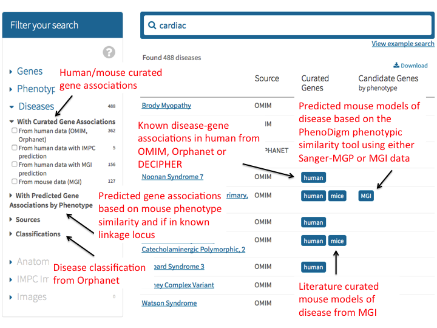
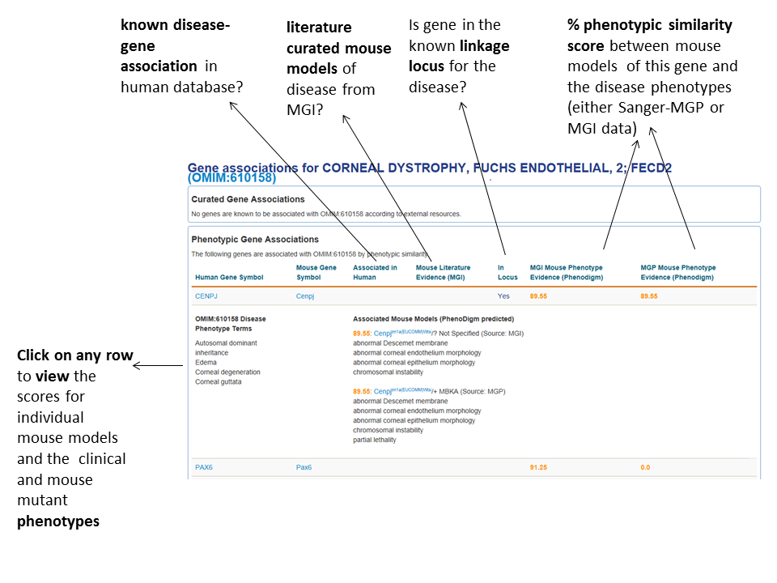

More information about the way IMPC uses disease data.
Explore Disease Data
Type a (partial) disease name or ID (OMIM, Orphanet or DECIPHER), click on the disease facet and the the results grid will return relevant disease pages. Eg. Search for "cardiac" diseases: Click here to find out more where the disease data comes from and how it is created. 
Disease details pages
The IMPC disease details page contains known gene associations and mouse models for the disease as well as predicted gene candidates and mouse models based on the phenotypic similarity of the disease clinical symptoms and the mouse phenotype annotations. The latter uses data from both the MGI curated dataset as well as high-throughput phenotype assignments from the IMPC pipeline. 
PhenoDigm
We use our PhenoDigm algorithm to calculate a percentage similarity score where the best possible mouse model match to a disease would score 100%. In this interface, we only display high-scoring (> 60%) matches that show a reasonable phenotypic similarity, with the exception of the known gene associations where we display results for all possible mouse models.